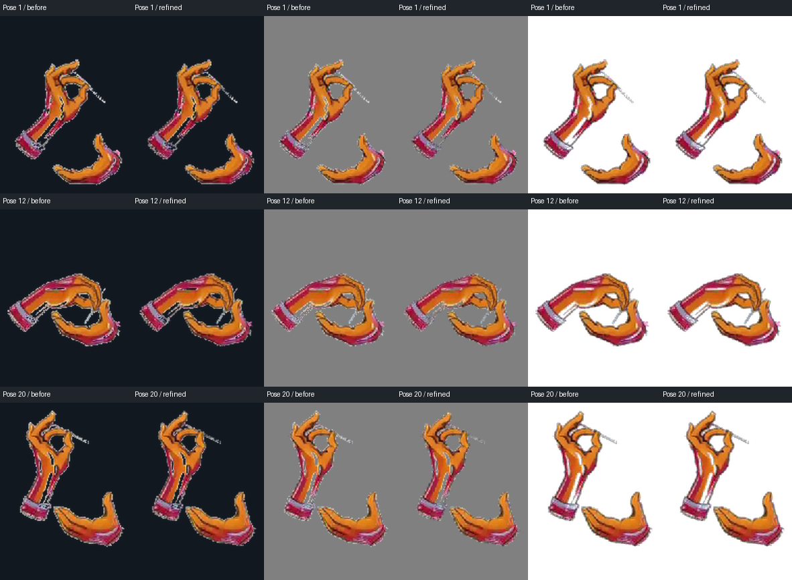

Better edges. Repeatable grab checks.
Reprocessed the retained video through the workbench, without a provider call. Fixed playback skipping the final held pose and added visible training controls for facing, walls, interruption, KO and expiry. Still changes requested: needle continuity, remaining speckles and the return to idle need art correction.
Real engine · five grab drills · 42 seconds
Left wall, right wall, injected six-tick hit, forced summoner KO, then accelerated summon expiry. Slow playback, Reactive mirror dummy, actual training buttons. These explicit test injections check cleanup; this is not a competitive match or proof of all body types.
Workbench refinement · 50 seconds
Enable local-color edge refinement and create a separate candidate from the saved source. The uncut recording retains compilation and history waits, ending with the saved-checkpoint confirmation. No new generation.
Inspect the edges
Matched crops on dark, grey and white. The pale-edge coverage heuristic fell 81.4%; that is a diagnostic, not an art score. The source reference itself still needs correction.

Evidence, lineage and remaining work · All 20 poses · Compiler provenance · Edge measurements · Open current-draft testbed